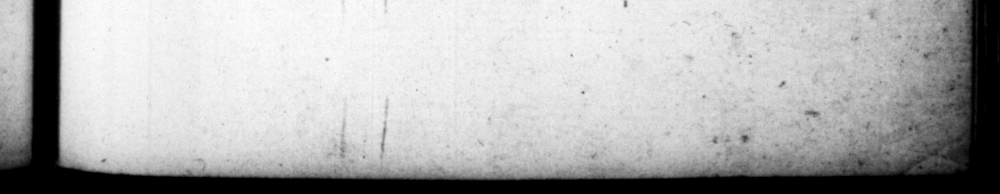

ef Mes, , ace the : > ref S* . rr 7 * A * wg 2; © * * © — 8 25 CASAR. leo vel alem, popinasinibac: circumgue vicos vagabatur frell ludibundus, nec ſine pernicie tamen. * - ahem l | cena verberare tes vulnerare, 1 4 de- — ere aſſueverat: las etiam effringere 3 er re; uintana * conſtitu · ta, ubi paru & ad licitationem dividende aſſimeretur. juſmodi xixis, vite periculum adiit, a quodam laticlavig, cujus ach attrecta verat, prope ad necem Fog L. 3 * = gum) — tribunis commiſit, procul & occulte ſubſequentibus, Interdiu quoque clam geſtatoria ſella delatus in theatram, ſeditionibus pantomimorum ex parte proſcenii 2 ſiga ſimul ac ſpectator adeEt cum ad manus ven— eſſet, lapidibutqe & ſub ſcllurum fragminious decerneretur, multa & ipſe jecic in populum, atque etiam prætoris caput co oiavit. aullatim veto invale(cenctbus vitiis, Jocularia & lacebras omiſit, nullaque d iſſimulandi cura, ad majora palam erupit. Epulas à medio die ad med iam noctem refotus ſepiuscalidis piſcinis, ac tempore eltivo nivatis. Pony que nonnunquam & in publi Naumachia precluſa, vel Martio campo, vel Circo maxima, inter ſcortorum totius - urbis ambubajarumque miniſteria. Quoties Oftians Tiberi deflueret, aut Bajanum finum preternaviga—. diſpoſitæ per littora & as diverſorie tabernæ 3a · — iaſignes gane & matronarum inſtitorio copas imitantium, atque hinc inde hoctantium ut TR Inprotrahebat: N R "_— * & 1 4 * * . = „ bat, K 1 Frlckir 4 2 7 ime of ome tribunes following flance. Im the 5. time too, he be carried in à chair incognits into the "ar any and poſting himſelf upon the wipe part of . o tbr qu Was ner only» [aero of the quarrels arifag account of the pantominic 25 an encourager of them too. And zeces of broken benches te fly 4 — , them very plenrifull y 1 and once broke # pre: or”s bras for him. ing out inte crimes more ener mens nature, without the leaft concers to conceal them. He com: inu⸗ revels 2 mid da to mid-night ing frequently refreſt\d by warm bare | in the ſummer- time, in ſuch 2 cooled with ſnow. ſupped in Jon as in the 7 with the 10 775 in the e, ff f = car, ge 6 be ek of he cn, and thiſe pu. K ria. "Ap he went down the Tiber 10 Ofiia, er coef it by the bay, bay 1 brot h - CONVENIenc:es all alene 900 hich flood maatrons, * invited when they came to laws, and flones and —— » © = - a. 1 4 A
